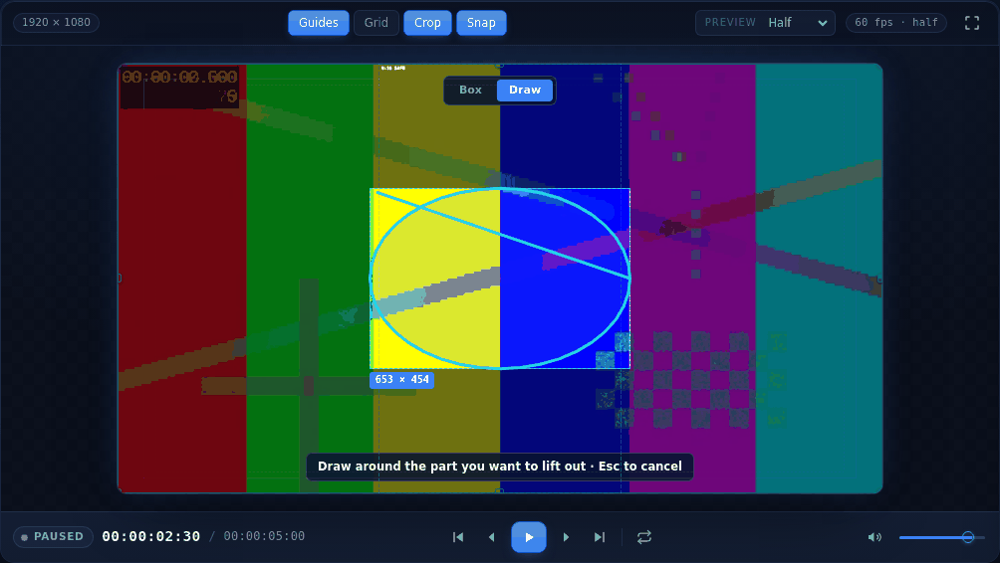
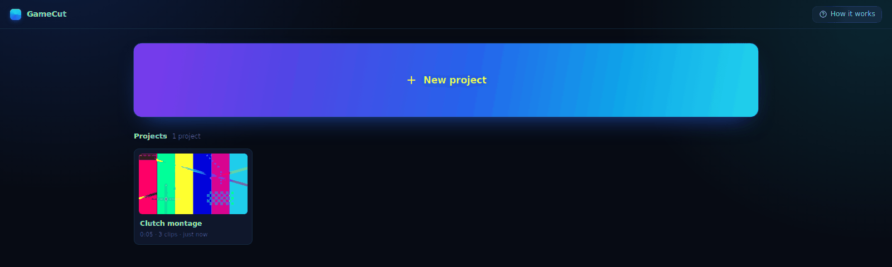
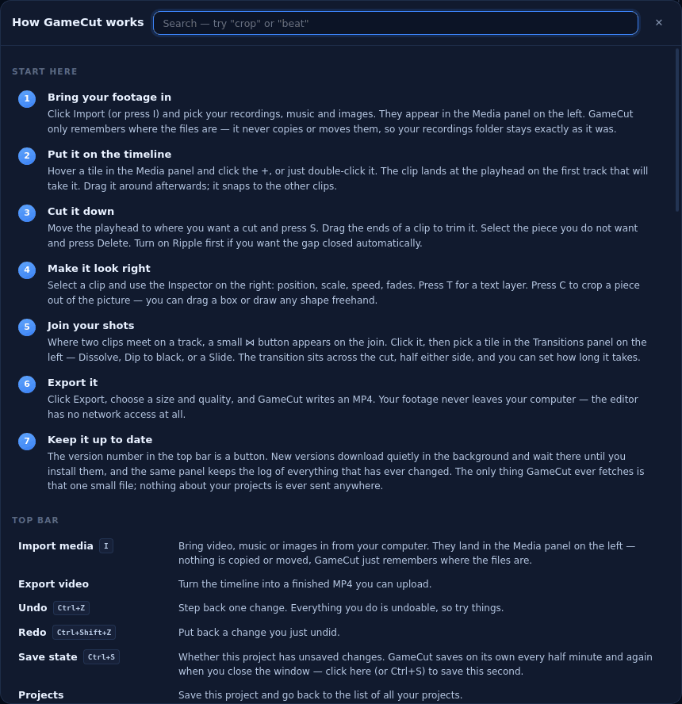

Multi-track timeline, CapCut-style transitions, a text engine built for titles, beat-synced cutting, and export straight to MP4. No account, no upload, no subscription — your footage never leaves your computer.
Multi-track video, text and audio. Drag, trim, split at the playhead, snap to other clips or to the beat. Zoom with Ctrl+scroll. Everything is undoable.
Transitions on the cut
A button appears where two clips meet. Click it and pick Dissolve, Dip to black or a Slide. It sits across the cut, half either side, so the shot still changes where you cut it.
Crop anything out
Drag a box round a coin counter or a killfeed — or trace any shape freehand. It becomes its own live layer you can move and magnify, with the gameplay still running underneath.
Text that looks finished
A row of ready-made looks rather than a column of sliders. Gradient fill, glow separate from shadow, background plates, one-click entrances, and any font on your computer.
Cuts on the beat
Set the BPM or tap it out, and the timeline draws a line on every beat for clips to snap to. Made for cutting to a Suno track.
Straight to MP4
Renders at full resolution through the same code that draws the preview, so what you watched is what you get. 16:9, 9:16 for Shorts, 1:1 and 4:5 — switching reframes every clip.
Look
Nothing is an unlabelled icon.

The crop tool in Draw mode — trace any shape, keep only what is inside it.

Opens on your projects, and saves itself every half minute.

Press ? for a searchable sheet: every tool, in plain words, and every shortcut.New versions arrive quietly and wait until you install them.
Your footage
It never leaves your computer. That is enforced, not promised.
Your recordings are never uploaded, and never copied. A project remembers where your files are on your own drive and plays them from there. Move a file and it tells you, rather than pretending.
The editor cannot reach the network at all. Not “does not” — the part of the app that holds your footage, projects and text is refused every network protocol at the process level. There is no code path from your project to the internet.
No account, no sign-in, no telemetry. Nothing is counted, timed or reported. There is nothing to opt out of.
One request, ever. Every few hours the app reads one small file from this site to see whether there is a newer version. No identifier, nothing sent, nothing about you or your work. Updates are signed, so nothing can install itself but a real release.
What’s new
Every version, and what it brought.
1.5.0Current11 September 2026
GameCut can now update itself. When you publish a new version it arrives quietly in the background and a card asks whether to install it — nothing changes until you say yes.
The version number in the top bar opens an Updates panel: what you are running, what is waiting, and the full log of everything that has changed.
Every update is signed. An install refuses anything that is not signed by the key it was built with, so nothing can push code to your machine but you.